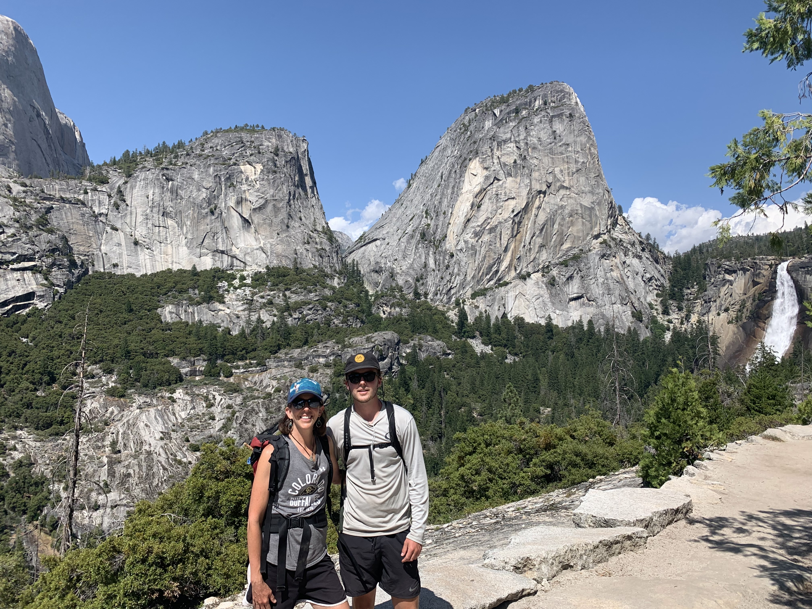

About Me
Summary
I am a recent graduate from the University of Colorado Boulder with a BS in Mechanical Engineering along with acquiring my Engineer in Training certification. My education and senior capstone project, combined with a diverse work background, has equipped me with a comprehensive skill set that I am eager to apply in my career. I am particularly passionate about the energy and environmental fields, driven by a desire to improve our natural systems and integrated infrastructure. In my free time, I enjoy playing sports and exploring the mountains, and I’m always seeking to enhance my understanding of the world and better myself.
Education
College
I chose the University of Colorado Boulder for my college experience due to its renowned engineering school, stunning scenery, and proximity to the mountains. The school's vibrant culture also appealed to me. I successfully graduated in four years with a GPA of 3.62, a testament to my dedication and hard work. As a mechanical engineering student, I appreciated the diverse curriculum that prepared me for various careers. I found that the skills I acquired, such as problem-solving and critical thinking, were applicable beyond the classroom, enriching my life in unexpected ways. During my time at Boulder, I explored Greek culture for over a year. However, with my busy workload and other hobbies, I found that it did not align with my interests enough to continue. I have provided my college diploma in the documents section of this website. For any additional information, such as my transcript, feel free to contact me via email or phone.
High School
I attended high school in Steamboat Springs, where I actively participated in various activities. Graduating at the top of my class with a GPA of 4.17, I strived for high excellence in academics and beyond. Sports played a significant role in my high school experience. I was involved in hockey, tennis, and lacrosse, and had the honor of serving as captain of the hockey team during my junior and senior years. These experiences taught me valuable leadership and teamwork skills. In addition to athletics, I was a member of the National Honor Society for two years, taking on the role of treasurer. This allowed me to contribute to my school community in a meaningful way. I also tried speech and debate for a year. Although challenging, it was a rewarding experience. My time in high school was instrumental in shaping who I am today.
Hobbies
Traveling
I consider myself incredibly fortunate to have traveled to many parts of the world, thanks in part to my mother's work at a local airport, which grants me free flights. I've had the opportunity to explore four of the seven continents. One of the highlights of my travels was taking a gap year in New Zealand, a country I still consider to be one of the most beautiful I've ever visited. I love experiencing different cultures and meeting people from around the world, as it helps me put my life into perspective and connect with everyone around me.
Being Outside!
One of my greatest passions is simply being outdoors and enjoying nature. I've been backpacking in numerous places, including various locations in Utah, the Wind River Range in Wyoming, and in Colorado. My connection to the natural world runs deep, and I have a profound love and respect for the Earth.
Sports
I'm a naturally competitive person and love playing just about any sport. Growing up in Colorado, I developed a love for skiing, thanks to the fantastic resorts in the area. Recently, I've been enjoying playing in a men's hockey league, as well as tennis, pickleball, and basketball with friends.
Guitar
While I'm still a beginner, I find so much beauty in music and have always had a sense for it. Playing the guitar is not only a hobby but also a way for me to relax and unwind. I believe that my interest in music helps me in other areas of life, fostering creativity and a deeper appreciation for the arts.
Friends and Family

I come from a loving and supportive family that includes my father Kevin, mother Sally, sister Kelly, and brother Joe, as well as our beloved dog Lucy. My family has a strong presence in the medical field, with my father, mother, and sister all working in healthcare. My brother received the same degree as I did, in mechanical engineering. He now works at a chemistry lab in town, using his skills to contribute to his field. I am the youngest of my siblings, with my brother being two years older and my sister four years older than me. We are an active family, always looking for ways to stay engaged with each other and our community. We also have a large extended family, with a total of 37 cousins that we love to spend time with. I have been blessed to grow up with such caring and special friends around me. Many of my friends have had an extremely meaningful part in shaping who I am.
Other Interests
Neuroscience
I have a keen interest in the mind, brain, and consciousness. I am fascinated by the complexity and beauty of the mind and how it shapes our experiences. I am also intrigued by the effects of meditation on the brain and how all these aspects are interconnected. Neuroscience is a field that I find particularly captivating, as it offers insights into these profound topics.
Health and Biology
I have a strong desire to maximize my health, as I believe it is one of the most crucial aspects of life. I am interested in various aspects of health, including physical and mental training, maintaining a healthy diet, and exploring how our lifestyle choices impact our biology and overall health. This interest is closely related to my fascination with the brain and consciousness. I find the human body to be incredibly impressive, and I am constantly exploring and learning new ways to optimize my health and well-being.